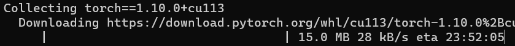
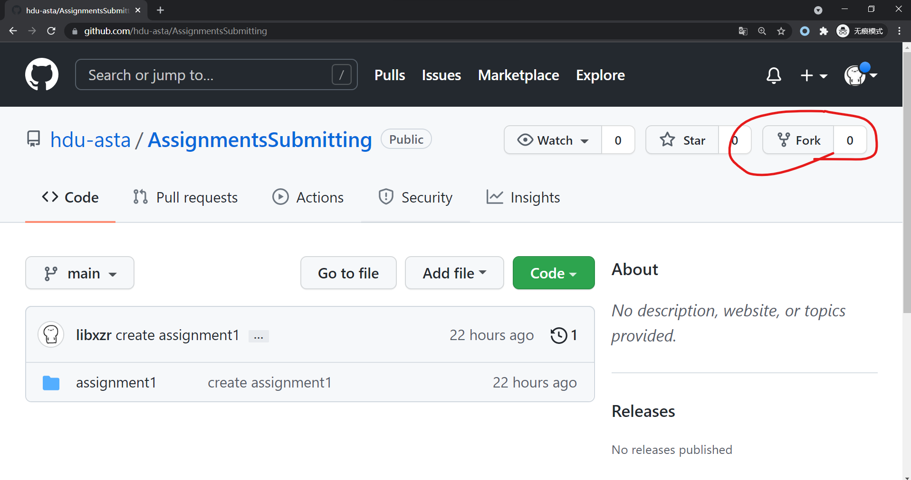
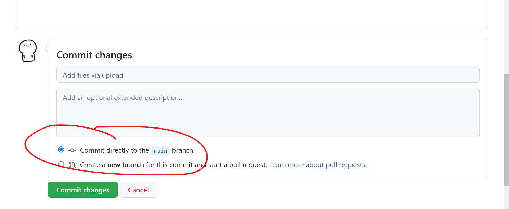
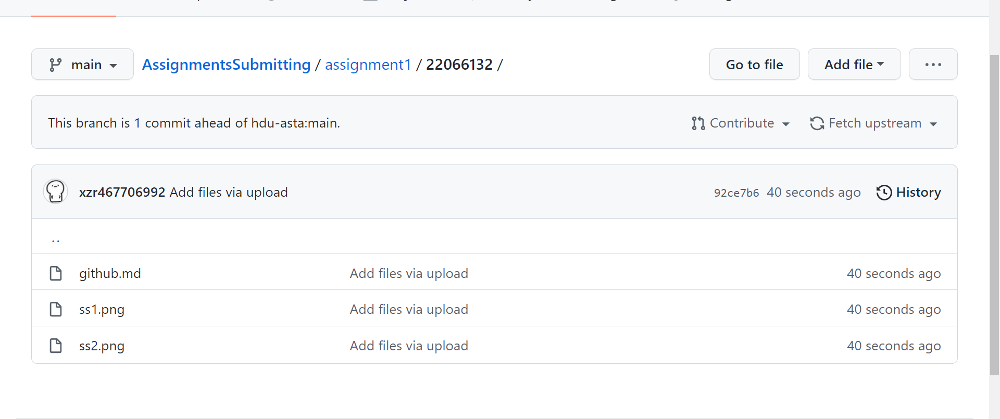

New World Opening
# New World Opening 科协软件部开发方向第一期任务 ## 任务一：学会科学的上网 ### 任务点 - 使用任意方式登录 Google 并截图 （google.cn除外） - 打开[这个页面](https://github.com/hdu-asta/ASTA)，截图证明你能看到**一个大大的科协logo**而不是一张裂掉的图片 ### 为什么要科学的上网？ #### 1. 百度 很烂 搜索如上的内容（某个 linux 软件包的配置），Google能够直接将你带入精准而优雅的**官方文档**（第一条），而百度只会让你在别人写的（或者互抄）的~~垃圾~~文章中间转来转去。 这些文章虽然有一定参考性，但是其中**过时的**和具有**误导性**的也不占少数。技术的迭代是很快的，而**官方文档从来都是获取最新技术细节的最佳渠道**。 另外，百度能够搜索到的网站，基本都是要求在国内备案审查过的，这就导致了**大量的优质个人博客、技术社区和一些冷门的教程根本无法被搜索到**，再加上其搜索收录速度极慢，Google甚至是Bing都可以轻松为你打开新天地。 比如你们李老板的博客：[百度](https://www.baidu.com/s?wd=lvpiche%20blog) [Bing](https://cn.bing.com/search?q=lvpiche+blog) #### 2. 人类的智慧 很慢 如果不学会科学的上网，你可能需要忍受 Linux 内核 Android 开源项目 Pytorch 机器学习框架  **没有基本的网络质量作为支撑，一大批的前沿技术和优质项目都将离你远去。** 而为了去寻找接触这些东西的方式，你可能会被以下过程折磨： - 百度的误导性搜索 - CSDN 积分 - 百度网盘10kB/s - 扫码关注公众号以获取资源 - 以为是XX 结果下了个XX下载器 - 下载的东西是上古版本 - 随手一点给电脑装了一堆广告软件 - ...... 究竟是应该**科学的上网，享受官方的下载渠道和方便的下载**， [还是成为上面这些趁火打劫的温室细菌的韭菜](https://www.zhihu.com/question/343609113)， 由你决定。 ### 如何科学的上网？ `《中华人民共和国计算机信息网络国际联网暂行规定》第六条、第十四条、第十五条相关规定，任何单位和个人不得自行建立或者使用其他信道进行国际联网，违反本规定第六条的，由公安机关责令停止联网，给予警告，可以并处15000元以下的罚款；构成犯罪的，依法追究刑事责任。` 故请自行探索。 以下提供一些线索，**仅供学习使用，严禁用于非法用途**： - 你可以使用一台海外服务器和某些开源项目搭建自己的信道 [项目1](https://github.com/v2fly/v2ray-core) [项目2](https://github.com/trojan-gfw/trojan) [项目3](https://github.com/shadowsocks) [服务器供应商1](https://www.gigsgigscloud.com/) [服务器供应商2](https://bandwagonhost.com/) [服务器供应商3](https://buyvm.net/) - 你也可以直接使用某些[加速提供商](https:/tangguo.cyou/user/#/register?code=flVhmRaL)的信道和软件 ## 任务二：注册 Github 账号 既然你已经完成了任务一，那我相信，以你所拥有的搜索方法和信息渠道，完成这个任务不成问题。 ### 任务点 - 注册 Github 账号 - 了解 Github 上的一些基本概念，比如：Repository、Branch、Commit、Issue、Pull request、Star、Fork、Watch、Follow 等 - ~~闲得无聊~~学有余力者，可以尝试在自己的电脑上安装 Git 客户端，并尝试让本地 Git 仓库与你的 Github 联动（非本期任务重点，还是先把网页弄清楚吧） ### 可能需要的东西 - 科学的上网方式 - ~~一定的英语水平~~ 带有翻译功能的浏览器 ~~或者复制粘贴翻译其实也无所谓~~ - 一个注册用的邮箱 - 遇到问题时使用搜索引擎搜索的能力 ### 指路 - 先刷一会儿知乎 [1](https://www.zhihu.com/question/269033309) [2](https://www.zhihu.com/question/319376501) - [一个看起来还不错的 Github 小白入门](https://github.com/CatOneTwo/GitHub-Tutorial/issues/1) ## 任务三：学习 Markdown 标记语言 这并不是一门编程语言，这只是一种文档的排版语言。 既然你已经对 Github 有了一定了解，那你一定会发现，几乎所有项目都会有一个`README.md`文件作为对项目的介绍和引入（默认会显示在项目首页上），而这个`.md`正是 Markdown 的缩写。 主流的开发者社区都对 Markdown 有着完善的支持，包括 Github、Stack Overflow 甚至是国内的 CSDN、Segmentfault 等。 以后你也有可能会去搭建自己的博客，几乎所有的主流博客框架都具有完善的 Markdown 支持，比如 Wordpress、Typecho、Hexo、Hugo 等。 **只要你呆在这个代码的圈子里，Markdown 迟早要学， 那不如现在就学。** ### 任务点 - 掌握 Markdown 的基本语法 - 写一个 Markdown 文件，简要解释一下上个任务中的 `Github 上的一些基本概念` ### 指路 - [一个看起来还不错的 Markdown 介绍](https://juejin.cn/post/6959796807761133576) ### Markdown 编辑器推荐： - 你的大脑 （写多了完全就可以想象出自己写的东西长啥样子） - Github 在线编辑器 新建一个仓库 -> Add file -> Create new file 然后就可以直接开始写了，写完点 Preview 直接预览 - [Typora](https://typora.io/) 挺不错的，现在是免费的，以后就说不准了 - VSCode Markdown All in one 和 Markdown Preview Github Styling 插件 ~~(我用的是这个)~~ 前提是你要装了 VSCode 也许细心的你会发现，**你所看到的这个网页并不是使用标准的 HTML 写成的，而是 Markdown**。除了HTML的头部以外，从`# New World Opening`往下的所有内容都是由纯粹的 Markdown 写成。 （需要注意的是，浏览器本身是无法直接解析 Markdown 的，之所以我可以用 Markdown 写网页是因为使用了 [md-page](https://github.com/oscarmorrison/md-page) 这个项目） ~~因此，其实你也可以自己改一改这个 HTML 勉强当成 Markdown 编辑器用。~~ ## 任务四：交作业 via Pull request 既然你已经完成了任务一二三，那就来综合实践一下，顺便交个作业。 ### 任务点 - 按照下方要求使用 Pull request 向指定的 Github 仓库提交作业 ### 要求 向[这个仓库](https://github.com/hdu-asta/AssignmentsSubmitting)发起 Pull request。 要求在 **assignment1** 文件夹下创建以**你的学号**命名的子文件夹，并在其中放入 **任务一中的截图** 与 **任务三中的Markdown 文件** 参考目录结构如下（文件名无所谓） ``` . └── assignment1 ├── 22066132 │ ├── github.md │ ├── ss1.png │ └── ss2.png └── placeholder ``` ### 说人话 假如你难以操作上面的内容，也许是因为你对 Github 并未完全熟悉，可以带你走一程。 其实上面的内容当中存在一些纯网页难以操作的地方，下面会教你一个解决办法。 首先 Fork 所要求的交作业仓库。  然后，进入你 **Fork 得到的仓库的** **assignment1** 文件夹，选择上传文件。 在打开的上传页面中，**在网址的后面加上你的学号**，然后回车。 因为**作业要求交到以学号命名的文件夹当中**，但是 Github 网页版并不支持创建文件夹，因此需要把文件塞进一个本来就不存在的文件夹中迫使其被创建。 当然，如果你已经掌握了 Git 版本控制系统的使用，你可以在本地用非常恰当的方式来完成操作，而不需要在这儿离谱的改网址。 接下来就可以选择文件上传了（下方圈圈）。**注意上方的圈圈得是你的学号**，否则文件会被上传的错误的文件夹（上一步没做好）。 接下来点击`Commit changes`即可，画圈部分保持如图所示默认状态不变。 当然，你也可以在上面写上 commit message 和 description 不过这不是现在重点。  上传之后的目录结构大概是长这个样子的（文件名无所谓），可以看到**文件被上传到了学号命名的指定文件夹中**。  之后**点击上方的 Pull requests 选择卡**， 再选择创建新的 Pull request （右侧画圈）。 注意：**这个过程请确保在你自己的仓库中完成**（左上角画圈），如果在源仓库中完成需要点一些额外的选项。 进入新建 Pull request 的页面后，左上角显示的仓库所有者会自动变成交作业的源仓库，`base repository`和`head repository`也会自动设置好，大概如图所示。 含义是：你将要把你自己仓库的修改以 Pull request 的方式提交到科协的仓库。 base 指的是 你要提交给谁，head 指的是 从哪里提交过去。 之后点击绿色按钮即可。 接下来会跳转到写介绍的页面，简单描述一下这个 Pull request ，然后再点击绿色按钮确认提交。 之后，就能在科协源仓库看见你的 Pull request 被创建了。 ### 为什么这么复杂？ 这仅仅只是开源软件工作流中的一小个步骤，如果你觉得这个过程复杂到完全无法理解，那我觉得大概率你并没有认真学习 `Github 上的一些基本概念`。 此外，隔壁[杭电助手](https://github.com/hduhelp/backend_2021_freshman_task)就是这么干的，而且人家贴出的教程直接是在命令行上操作版本控制系统，~~比这个简单的网页操作不知道高到哪里去了~~。